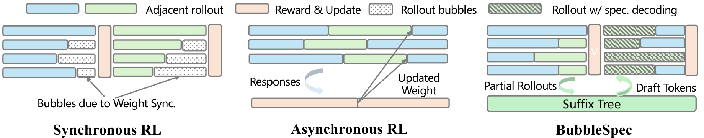
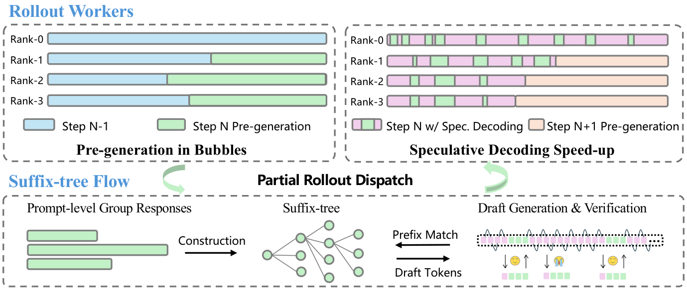
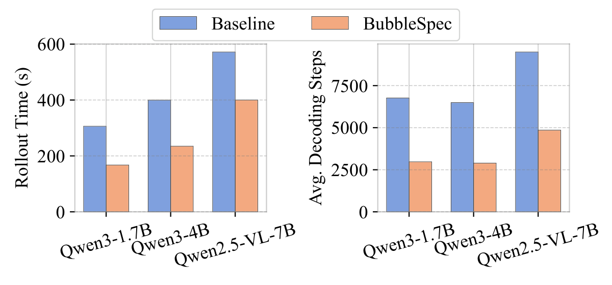
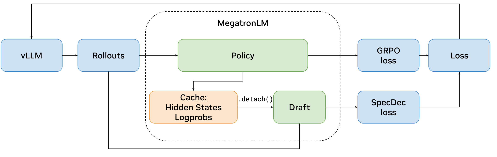
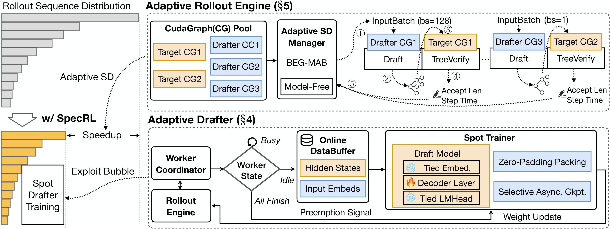
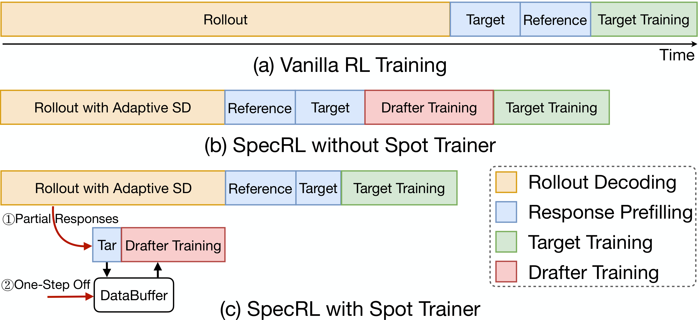
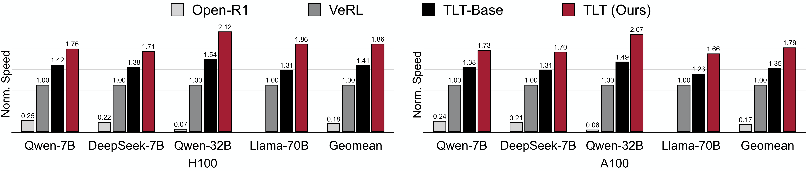

同步RL训练中的bubble
长 CoT 同步 RL 中，rollout 常占总训练时间 70%+，根因是 response 长度方差大，快 GPU 只能等最慢的。BubbleSpec 把空转拆成两类：
- Inter-GPU bubble：先完成的 rank 完全闲置，等最慢 rank
- Intra-GPU bubble：rank 内大部分请求提前结束，剩余请求以小 batch 低利用率地拖
实验结果显示，两类合计占 rollout 的 60% 以上；实测平均 bubble 超过 rollout 的 1/3，最大超过 2/3
主流解法：async RL 与 partial rollout
面对 bubble，业界主流不是硬等，而是放松同步约束。两条常见路：
- Async RL（如 AReaL、StreamRL）：rollout worker 与 actor update 解耦，生成侧持续跑，权重异步同步；barrier 消失，代价是rollout权重版本或落后policy几步
- Partial rollout（AReaL、Kimi k1.5）：bubble 里提前rollout下一批 prompt，权重更新时打断生成，剩下半截由新 policy 续写后拼成完整 trajectory 进 batch。一条样本横跨多个 policy 版本
本质上，这是用训练稳定性换系统效率。近期工作（Jet-RL、When Speed Kills Stability 等）反复指出，这类 mismatch 会直接表现为训练不稳甚至塌缩

BubbleSpec：拿 bubble 换下一步的草稿
上一节的 async / partial rollout 也吃 bubble，但半截产物直接进样本。BubbleSpec 只做一步降级：bubble 里用当前 policy 预生成下一步的 rollout，不当样本、只当草稿，组织成 suffix tree——跨 step 的 pipeline，从第一步就加速，没有 warm-up epoch

三个设计决策
- 只用 inter-GPU bubble：intra-GPU bubble 时间更多，但和跑着的 decode 抢显存带宽，实测干扰不稳定
- rank 同步用周期 polling：每 50 个 decode step 查一次中央 synchronizer，协调开销可忽略
- 预生成数对齐 GRPO group size（16/prompt）：样本多命中率高但每步变慢；消融 4/16/32 → 183.8/167.6/184.4s
步数减少 ≠ 时间减少：unified attention
带草稿的请求触发了错误的 attention kernel：验证请求 query length 是 2–5，引擎按 prefill 处理，效率很差
BubbleSpec 结果：步数砍半，时间省三到四成
设置：Verl + vLLM、单机 8 卡、SAPO（GRPO/GSPO 同趋势）、64 prompt × 16 response、max response 48K/64K、draft tokens=4
| 模型 | 方法 | Rollout 时间 (s) | 平均 Dec. Steps | 最大 Dec. Steps | Accept. Len | Accept. Rate |
|---|---|---|---|---|---|---|
| Qwen3-1.7B | Verl | 306.2 | 6741 | 39531 | — | — |
| BubbleSpec | 167.6 (−45.2%) | 2913 (−56.8%) | 15908 (−59.6%) | 2.15 | 29.9% | |
| Qwen3-4B | Verl | 399.6 | 6489 | 37910 | — | — |
| BubbleSpec | 235.0 (−41.1%) | 2895 (−56.1%) | 17616 (−53.5%) | 2.09 | 28.6% | |
| Qwen2.5-VL-7B | Verl | 571.9 | 9500 | 60509 | — | — |
| BubbleSpec | 400.1 (−30.0%) | 4853 (−48.9%) | 34027 (−43.8%) | 1.81 | 21.7% |

NVIDIA：把 EAGLE-3 塞进 NeMo-RL
System-Integrated Speculative Decoding在 NeMo-RL + vLLM 里把 EAGLE-3（通用路径）和原生 MTP head（DeepSeek 式）做成 rollout 原语。价值不在算法，在讲清 RL 集成和纯推理 serving 的三个区别：
- 权重同步：policy 每步在变，draft 要持续贴住
- 训练语义：logprob / KL / loss 必须对 verifier 算，不能对 draft 算
- draft 在线训练免费搭车：监督信号复用算 GRPO loss 那次 forward 的缓存，经
.detach()喂给 draft head——不多跑前向、不污染 policy 梯度

时间都花在哪：generation 占 65–72%
设置：Qwen3-8B（RL-Think 续训 / RL-Zero 从 base 起）、GRPO + DAPO-Math-17K、32×GB200：
| 阶段 | RL-Think AR (s) | RL-Think Spec (s) | RL-Zero AR (s) | RL-Zero Spec (s) |
|---|---|---|---|---|
| Data + Prepare | 2.4 | 1.8 | 2.1 | 2.3 |
| Generation | 133.6 | 87.0 (1.54×) | 100.0 | 56.6 (1.77×) |
| Log-prob 重算 | 17.9 | 18.1 | 17.8 | 18.1 |
| Training | 31.4 | 30.5 | 31.3 | 30.5 |
| 整个 step | 185.3 | 137.4 (1.35×) | 151.2 | 107.5 (1.41×) |
Rollout generation comparison
| 方法 | Accept. Len (RL-Zero) | Gen 延迟 (s) | Speedup |
|---|---|---|---|
| Autoregressive | — | 100.0 | 1.0× |
| n-gram | 2.47 | 140.2 | 0.7× |
| EAGLE-3 | 3.32 | 56.6 | 1.8× |
RL-Think 上 0.5× 更惨。acceptance 2.47 不低，verify 开销直接把收益打成负
三个旋钮：draft 初始化、draft 长度、在线跟练
EAGLE-3 路线的实际收益由三个运维决策决定，论文各给了一组消融
1. Draft 初始化：对齐 rollout 分布 > 通用能力
| 初始化数据 (k=3, offline) | RL-Zero Accept. | RL-Zero Speedup | RL-Think Accept. | RL-Think Speedup |
|---|---|---|---|---|
| UltraChat（通用 chat） | 2.88 | 1.51× | 2.40 | 1.19× |
| DAPO（in-domain） | 3.32 | 1.77× | 2.77 | 1.53× |
用 policy 在训练 prompt 上的真实生成结果训 draft，比通用 chat 语料好一大截——draft 质量的定义是"贴住 rollout 分布"，不是"会说话"
2. Draft 长度：k=3 全面胜出，k≥5 可能比不加速还慢
| Draft 长度 k | RL-Zero Accept. | RL-Zero Speedup | RL-Think Accept. | RL-Think Speedup |
|---|---|---|---|---|
| 3 | 3.32 | 1.77× | 2.77 | 1.53× |
| 5 | 4.35 | 1.44× | 3.23 | 0.84× |
| 7 | 5.06 | 1.21× | 3.48 | 0.71× |
acceptance 随 k 单调涨、speedup 单调掉，k≥5 直接负收益——盯着 acceptance 调参会调进沟里
3. Online adaptation：是保险，不是加速器
| 初始化质量 | Offline speedup | Online adaptation | 增益 | 含义 |
|---|---|---|---|---|
| DAPO（in-domain） | 1.77× | 1.78× | +0.01× | 初始化好时几乎无增益 |
| UltraChat（通用 chat） | 1.51× | 1.63× | +0.12× | 初始化差时救回一截 |
online adaptation 更像保险，不是主加速器；主收益还是来自一开始就贴住 rollout 分布
TLT：bubble 不只能生成草稿，还能训练 drafter
Taming the Long-Tail（TLT）和 BubbleSpec 盯上的是同一块长尾 bubble，用途不同：- BubbleSpec： 拿它生成草稿
- TLT 拿它训练一个 EAGLE drafter

Adaptive Drafter：在 bubble 里持续跟练 policy
单层 drafter：延迟由层数决定，不由参数量决定
drafter 就是 target 的一层 decoder：Embedding 和 LM Head 共享 target 权重并冻结，只训中间这一层，输入是 target hidden state 拼上 token embedding
- 训练数据不额外花钱：RL 本来就要在 rollout 后跑 target / reference prefill 算 logprob 和 KL，把这趟 forward 的 hidden state 缓存到 host memory，直接当训练数据
- 为什么选 EAGLE-1 不选 EAGLE-3：EAGLE-3 的 speedup 略高（2.55× vs 2.24×），但 training-time test 让单步训练开销涨 7×，bubble 里的时间预算装不下
Spot Trainer：可抢占比峰值吞吐更重要
drafter 训练被当作可抢占的 spot task，塞进先完成 rollout 的空闲 worker：
- 调度：Worker Coordinator 跟踪每个 worker 的状态，空闲 worker 攒够阈值就组成 DP group 开训；rollout 一结束立刻抢占，把卡还给主流程
- 保进度：asynchronous checkpoint 后台保存、只保存那一层可训练参数，比同步全量保存快 9.2×
- 修数据偏差：只用先完成的短 response 训会有长度偏差，DataBuffer 把上一 step 的长序列回灌进当前批次。实测和全量训练效果相当
- 训练账：sequence packing 提吞吐 2.2×；每 10 个 RL step 训一次就够，额外开销占 RL step 不到 1%

Adaptive Rollout Engine：随 batch size 换挡
TLT 的 SD 用 tree drafting，三个参数：Draft_Depth 定树深、topK 定分支宽度、Tokens_to_Verify 定 target 一次验证多少候选。麻烦在于最优配置随 batch size 移动。Adaptive Rollout Engine的做法：
- 粗开关：running requests 降到 32 以下才打开 SD，大 batch 阶段按普通 decode 跑；切换时需要做一次 reprefill
- 细调参：SD 打开后，由 BEG-MAB 按当前 batch size 在候选配置里在线选
- 兜底：drafter 还没训好（最初几个 RL step）就退回 model-free 路线
BEG-MAB：Bucketed Epsilon-Greedy Multi-Armed Bandit
每个 arm 是一组 (Draft_Depth, topK, Tokens_to_Verify)：
- Bucketed：配置先按 Tokens_to_Verify 分组、映射到 batch-size 区间，batch 越大只允许 verify 越少的组
- Epsilon-Greedy：以概率 ε 随机探索、1-ε 利用。当前 batch 落在哪个区间，就只在那一组里选 arm，利用时取滑动窗口内 reward 中位数最高的一个
多策略 CUDAGraph 的内存账
换挡的前提是每套配置都有预捕获的 CUDAGraph，而 graph 显存随策略数线性涨：4 个候选策略朴素捕获要 30.39 GB，KV cache 的空间直接被挤掉。TLT 用三层去重压回 10.69 GB：
- batch size 分桶：比如bs=7，结果用了bs=8的graph，所以实际上需要 padding
- target 和 drafter 的 graph 拆开捕获
- 参数相同的 graph 跨策略合并
TLT 结果：整 step 1.7–2.1×
TLT-Base：关掉 learned drafter、只剩 adaptive engine + n-gram drafter，也有 1.35–1.41×，换挡逻辑本身就值三分之一

| 模型 | H100 TLT | A100 TLT | H100 TLT-Base | A100 TLT-Base |
|---|---|---|---|---|
| Qwen2.5-7B | 1.76× | 1.73× | 1.42× | 1.38× |
| DeepSeek-7B | 1.71× | 1.70× | 1.38× | 1.31× |
| Qwen2.5-32B | 2.12× | 2.07× | 1.54× | 1.49× |
| Llama-3.3-70B | 1.86× | 1.66× | 1.31× | 1.23× |
| Geomean | 1.86× | 1.79× | 1.41× | 1.35× |